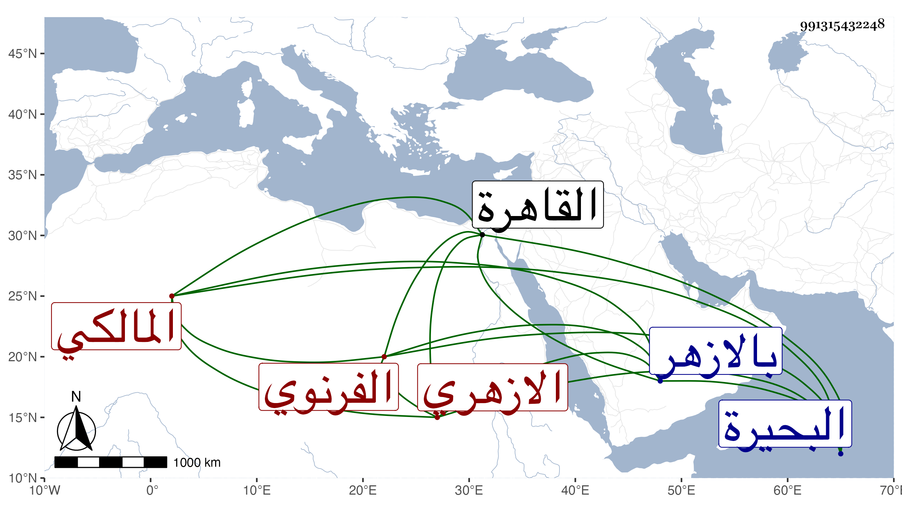

0902Sakhawi.DawLamic.ITO20230111-ara1.EIS1600.991315432248
Biography ID: 991315432248
236
محمد بن محمد بن سليمان بن عبد السلام البدر الفرنوي الازهري المالكي ، ولد سنة ثلاث وستين وثمانمائة تقريبا بفر نوة من البحيرة ونشأ بها فحفظ القرآن والبعض من الرسالة والمختصر ثم قدم بعد بلوغه القاهرة فنزل بالازهر وأكمل حفظ المختصر وألفية النحو وجمع الجوامع وتفقه باللقاني والسنهوري ولازمه فيه في الأصول والعربية وانتفع بجماعة من طلبته كالعلمي سليمان البحيري واشتغل وتميز وسمع علي بحضرة أمير المؤمنين مصنفي في مناقب العباس وضبط الاسماء وكتب الطبقة وكذا سمع على عدة أجزاء واختص بالتقى بن تقي شاركه ولده في الاشتغال . وهو عاقل متودد يكثير التردد إلى وسمع على الرضى الاوجاقي وأبي السعود العراقي وجماعة من طبقتهما فمن يليهما كالديمي والسنباطي بل سمع في الخانقاه على الوفائي .
